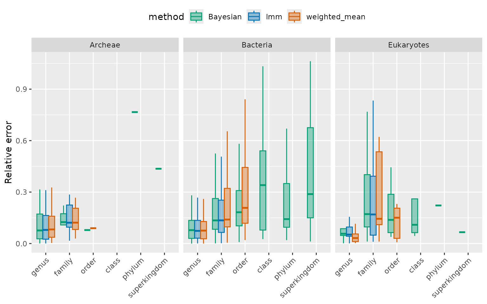
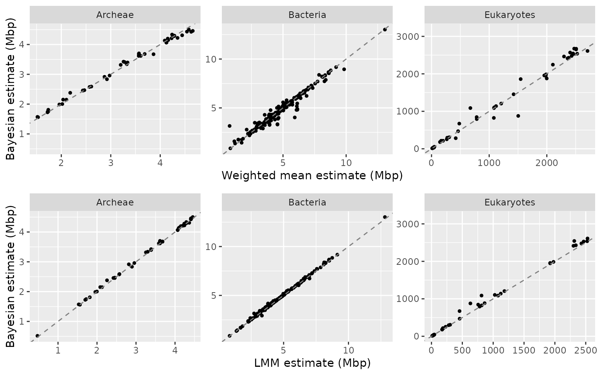

Comparing estimation methods
compare_methods.RmdMethods can be assessed and compared by splitting the species-level database into a training set and a validation set. The validation set used here was created using stratification: Species were randomly sampled within each group defined by match rank. For instance the family group was defined by species that, when removed from the database and placed on the validation set, are only represented in the training set at the family level.
Not all queries are estimable by all methods. The identification of taxa related to a query in the weighted means method is limited to ranks below and including order and only performs an estimation for queries that have at least two such matches. Valid estimations from the frequentist regression method are limited to match ranks below and including family. Only the Bayesian method can output results for any taxon that is recognised in the NCBI taxonomy.
Estimation error and confidence bounds were assessed for each method on the same validation set. However, summaries of performance displayed for each method only include estimates on observations that were estimable by the given method.
1. Estimation error
Below, we display the estimation error (relative to the true genome size) summarised by method and superkingdom. For a given match rank group, the three methods have on average similar errors. The error increases with match rank. For the validation set used here, the error for queries that have matches at the genus level is mostly between 10% and 20% of the genome size and can go up to above 50% at higher match ranks.
mycol <- c("#009E73", "#0072B2", "#D55E00")
ggplot(val_all, aes(y=relative_abs_error, x=match_rank, fill=model_used, col=model_used)) +
geom_boxplot(position = position_dodge(preserve = "single"), outliers=FALSE) +
labs(fill="method",colour="method", y="Relative error",x=NULL) +
facet_wrap(~sk_name) +
theme(legend.position = "top",
axis.text.x = element_text(angle = 45, hjust=1)) +
scale_color_manual(values = mycol) +
scale_fill_manual(values = alpha(mycol,0.4))
When estimable by all three methods, genome size predictions are in general similar across methods:
val_all_wide <- val_all %>%
select(sk_name, species, model_used, mean_Mbp) %>%
pivot_wider(names_from = model_used, values_from = mean_Mbp)
wm_vs_bayes <- ggplot(val_all_wide, aes(x=weighted_mean, y=Bayesian)) +
geom_point(size=1) +
geom_abline(slope=1, intercept=0, col="gray50", linetype="dashed") +
facet_wrap(~ sk_name, scale="free") +
xlab("Weighted mean estimate (Mbp)") +
ylab("Bayesian estimate (Mbp)")
freq_vs_bayes <- ggplot(val_all_wide, aes(x=lmm, y=Bayesian)) +
geom_point(size=1) +
geom_abline(slope=1, intercept=0, col="gray50", linetype="dashed") +
facet_wrap(~ sk_name, scale="free") +
xlab("LMM estimate (Mbp)") +
ylab("Bayesian estimate (Mbp)")
plot_grid(wm_vs_bayes,freq_vs_bayes, ncol=1)
2. Confidence intervals
Below we look at performance across 95% confidence interval estimated in each method. We compare summaries of width of intervals relative to genome size, by superkingdom. The intervals are negligible for the weighted means method compared to the two model-based methods, where the 95% CI width is around 50% of the genome size on average for species with matched at the genus level. For the Bayesian method, the confidence interval width increases dramatically with match rank.
mycol <- c("#009E73", "#0072B2", "#D55E00")
ggplot(val_all, aes(y=relative_half_CI95*2, x=match_rank, fill=model_used, col=model_used)) +
geom_boxplot(position = position_dodge(preserve = "single"), outliers=FALSE) +
labs(fill="method",colour="method", y="Relative error",x=NULL) +
facet_wrap(~sk_name) +
theme(legend.position = "top",
axis.text.x = element_text(angle = 45, hjust=1)) +
scale_color_manual(values = mycol) +
scale_fill_manual(values = alpha(mycol,0.4))
Trustworthy CI estimates should translate into a similar observed coverage, that is, we expect roughly 95% of true values to fall within the 95% confidence intervals. However we see that only the Bayesian method roughly satisfies this property. The frequentist methods slightly underperforms and the weighted mean method is untrustworthy for uncertainty estimates.
qc_long <- val_all %>% group_by(model_used,match_rank_2) %>%
summarise(n=sum(!is.na(in_CI95_range)),
CI95_coverage = sum(in_CI95_range, na.rm=TRUE),
CI95_coverage_prop = CI95_coverage/n)## `summarise()` has grouped output by 'model_used'. You can override using the
## `.groups` argument.
qc_text <- qc_long %>%
mutate(CI_coverage = paste0(CI95_coverage,"/",n," (",round(CI95_coverage_prop*100,0),"%)"))
qc_wide <- qc_text %>%
select(model_used,match_rank_2, CI_coverage) %>%
pivot_wider(names_from = match_rank_2, values_from = CI_coverage)
names(qc_wide) <- c("Method","95%CI coverage for match above family","95%CI coverage for match at or below family")
knitr::kable(qc_wide, format="markdown")| Method | 95%CI coverage for match above family | 95%CI coverage for match at or below family |
|---|---|---|
| Bayesian | 96/99 (97%) | 326/340 (96%) |
| lmm | 0/0 (NaN%) | 283/340 (83%) |
| weighted_mean | 1/60 (2%) | 27/337 (8%) |
3. Conclusion
The strengths and limitation of each method are outlined below. We emphasize that the weighted mean method is only suitable for taxa that are well-characterised at low taxonomic levels and when uncertainty bounds are of minor interest. The major advantage of the method is that it can be used on queries with several potential taxonomic matches. The Bayesian method is the most solid method especially for quantifying uncertainty around estimated means and obtaining estimates for taxa that are not well represented at low ranks in the NCBI database.
| CI estimation | Model information | Behaviour with well-studied organisms | Query is a list of several taxa | Minimum number of references needed for estimation | |
|---|---|---|---|---|---|
| Bayesian | very reliable | any rank | + | + | 1 |
| LMM | mostly reliable | up to family level | + | + | 1 |
| Weighted mean | unreliable | up to order level | ++ | ++ | 2 |